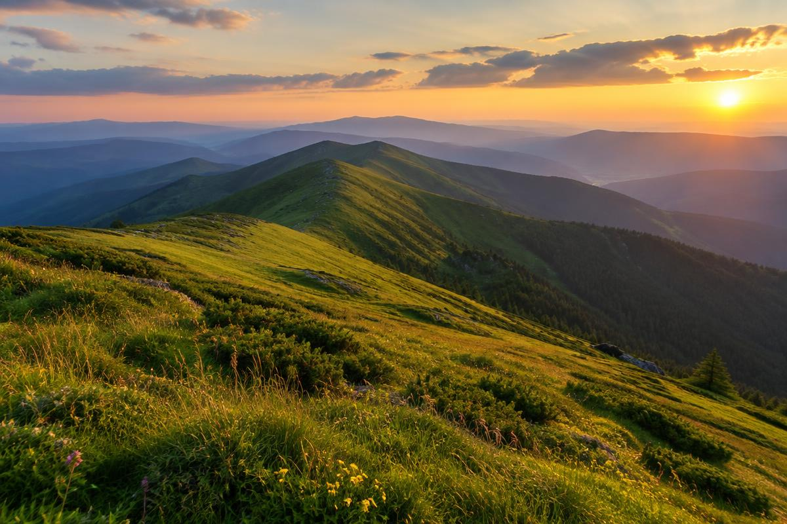
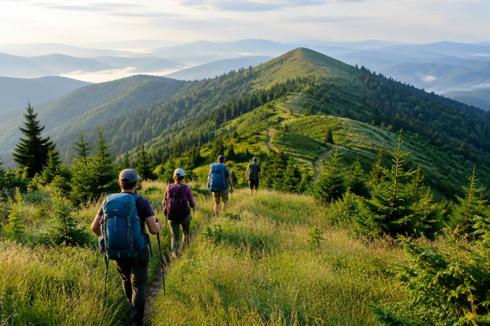

— Люди, які люблять дорогу
Peak Trails
Любимо не тільки вершини.
А й усе, що між ними.
Ранкову каву біля намету. Розмови на стежці. Момент, коли перестаєш дивитися на годинник — і починаєш дивитися навколо.
— Наш підхід
Гори — не змагання.
Це зустріч.
Із природою, новими людьми та собою без звичного поспіху. Ми створюємо мандрівки, у яких є місце і для руху, і для паузи.
Для нас хороший похід — не список підкорених вершин. Це маршрут, який відповідає вашому досвіду, зрозуміла підготовка та відчуття, що поруч є свої люди.
— Те, на чому стоїмо
Три прості орієнтири
Люди важливіші за темп
Невелика група — це можливість чути одне одного. Обираємо навантаження чесно, без гонитви за кілометрами.
План може змінитися
Погода в горах має останнє слово. Безпечний поворот назад для нас важливіший за красиву позначку на карті.
Після нас — тільки стежка
Забираємо своє сміття, бережемо місця ночівлі й поважаємо людей, для яких Карпати — дім.

— Від знайомства до стежки
До першого кроку
теж є маршрут.
-
01
Знайомимось
Обговорюємо ваш досвід, очікування й кількість днів. Не потрібно бути спортсменом — важливо підібрати своє навантаження.
-
02
Готуємось
Уточнюємо програму, місце зустрічі та список речей. Питання про взуття чи рюкзак краще поставити до виїзду.
-
03
Вирушаємо разом
На старті звіряємо план і погоду. Далі — крок за кроком, з паузами, краєвидами та місцем для несподіваного.